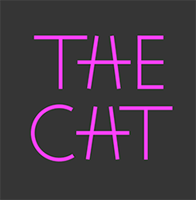
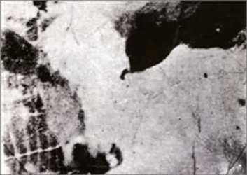
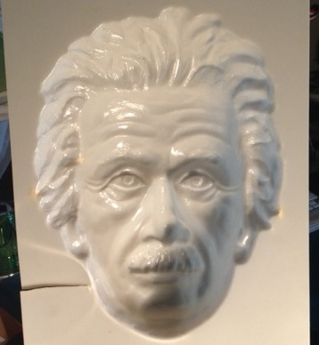

끝까지 베이즈다(It’s Bayes All The Way Up)
2016년 9월 12일
- 인식론적 상태(Epistemic status): 매우 추측적임. 본인은 신경과학자가 아니며, 인용된 논문들을 오해한 부분이 있다면 사과드린다. r/slatestarcodex에 이 논문들을 게시해 준 분들께 감사드린다. 신비주의와 패턴 매칭(Mysticism and Pattern-Matching) 및 조현병 환자를 위한 베이즈 정리(Bayes For Schizophrenics)도 참고하라. *
I
베이즈 정리(Bayes’ Theorem)는 특정한 종류의 조건부 확률을 계산하기 위한 방정식이다. 이토록 무미건조한 공식이 의사, 환경 과학자, 경제학자, 보디빌더, 습지 거주자, 그리고 국제 밀수꾼에 이르기까지 놀라울 정도로 광범위한 팬층을 끌어모았다. 결국 그 열풍은 베이지안 카바레와 베이지안 합창단이 모두 등장하고, 베이즈 정리를 이용해 신의 존재와 부재를 각각 증명하려는 대중서들이 출간되며, 심지어 베이지안 데이트 조언까지 나오는 지경에 이르렀다. 결국 모두가 과열된 분위기를 조금 가라앉히고, 베이즈 정리가 문자 그대로 모든 것을 설명해 줄 수는 없다는 사실을 받아들이기로 합의했다.
자, 그렇다면 뇌 속의 신경전달물질들이 베이즈 정리(Bayes’ Theorem)의 서로 다른 항들을 나타낼 수도 있다는 사실을 알고 있었는가?
우선 기본부터 짚고 넘어가자. 베이즈 정리(Bayes’ Theorem)는 새로운 증거를 기존의 믿음과 통합하기 위한 수학적 틀이다. 예를 들어, 당신이 조용한 교외 집 거실에 앉아 있는데 사자 울음소리 같은 것을 들었다고 가정해 보자. 당신은 사자가 집 근처에 있을 가능성이 낮다는 사전 믿음을 가지고 있으므로, 아마 사자는 아닐 것이라고 생각할 것이다. 아마 이웃집의 어떤 이상한 기계 소리가 우연히 사자 소리처럼 들렸거나, 아이들이 사자 소리를 재생해 장난을 치는 것이거나, 혹은 그 비슷한 무언가일 가능성이 높다. 결국 당신은 근처에 사자가 없을 가능성이 크다고 믿겠지만, 울음소리를 듣기 전보다는 사자가 근처에 있을 확률을 약간 더 높게 잡게 된다. 베이즈 정리는 바로 이러한 추론 과정을 수학으로 변환한 것에 불과하다. 더 자세한 내용은 여기에서 확인할 수 있다.
뇌가 하는 일 또한 이와 같다. 즉, 새로운 증거를 기존의 신념과 통합하는 것이다. 이 블로그에서 이전에 사용했던 몇 가지 예를 들어보겠다.



이 세 가지는 모두 하향식 처리(top-down processing)의 사례다. 상향식 처리(bottom-up processing)가 지각을 통해 세상에 대한 모델을 구축하는 과정이라면, 하향식 처리는 세상에 대한 모델이 지각에 영향을 미치게 하는 과정이다. 첫 번째 이미지에서 당신은 첫 단어의 가운데 글자를 H로, 두 번째 단어의 가운데 글자를 A로 인식한다. 실제로는 같은 글자임에도 불구하고 말이다. 당신의 세계 모델이 'TAE CHT'보다는 'THE CAT'일 가능성이 더 높다고 말해주기 때문이다. 두 번째 이미지에서 당신은 'PARIS IN THE SPRINGTIME'이라고 읽으며 'the'라는 단어가 중복된 것을 그냥 지나칠 것이다. 당신의 세계 모델이 해당 문구에는 'the'가 하나만 있어야 한다고 알려주기 때문이다 (마치 당신이 이 단락에서만 내가 'the'를 세 번 중복해서 쓴 것을 그냥 지나쳤을 가능성이 높은 것처럼!). 세 번째 이미지는 그것이 소의 머리라는 것을 깨닫기 전까지는 아무 의미 없어 보일 수 있다. 하지만 일단 소의 머리로 인식하고 나면, 당신의 세계 모델이 지각에 영향을 주어 그것을 다른 것으로 보는 것이 거의 불가능해진다.
(모든 모음의 위치가 뒤섞여 있음에도 당신이 여전히 이 단어들을 읽을 수 있다는 사실은, 노이즈가 섞인 상향식 데이터가 제자리를 찾아가게 만드는 하향식 처리 과정의 또 다른 사례이다)
하지만 하향식 처리(top-down processing)는 이러한 예시들이 시사하는 것보다 훨씬 더 도처에 편재해 있다. 창밖을 내다보며 나무를 보는 것 같은 단순한 일조차 하향식 처리를 필요로 한다. 나무를 100% 명확하게 보기에는 너무 어둡거나 안개가 자욱할 수도 있고, 나무에 비친 빛과 어둠의 정확한 패턴이 이전에 한 번도 본 적 없는 형태일 수도 있다. 하지만 당신은 나무가 무엇인지 알고 있으며 주변에 나무가 있을 것이라 기대하기 때문에, 그 이미지는 '나무'라는 스키마(schema)로 '착' 달라붙게 되고 당신은 그곳에서 나무를 보게 된다. 늘 그렇듯, 이 과정은 제대로 작동하지 않을 때 가장 극명하게 드러난다. 예를 들어, 벽이나 천장의 무작위한 패턴이 얼굴 형상으로 '착' 달라붙어 보이거나, 바람 소리가 당신의 이름을 부르는 목소리로 '착' 달라붙어 들리는 경우가 그러하다.
깨어 있을 때 당신이 지각하는 대부분의 것들은 매우 제한적인 입력값으로부터 생성된다. 이는 입력값이 전혀 없는 상태에서 꿈을 만들어내는 바로 그 메커니즘에 의해 생성되는 것이다.
콜렛, 프리스 및 플레처(Corlett, Frith & Fletcher, 2009) (이하 CFF)는 이 아이디어를 확장하여 프로세스의 각 단계에 작용하는 생화학적 기질에 대해 추론한다. 이들은 지각을 하향식(top-down) 처리와 상향식(bottom-up) 처리 사이의 '악수'로 본다. 하향식 모델은 우리가 무엇을 보게 될지 예측하고, 상향식 모델은 실제 세계를 지각한다. 그런 다음 이 두 모델은 중간 지점에서 만나 서로의 기록을 비교하며 예측 오차(prediction error)를 계산한다. 예측 오차가 충분히 낮으면, 이는 매끄럽게 다듬어져 현실에 대한 합의된 관점이 된다. 반면 예측 오차가 너무 높으면, 이는 돌출성(salience)이나 놀람으로 인식되며, 우리는 모델 간의 불일치를 해결하기 위해 해당 자극에 주의를 집중한다. 만약 상향식이 옳고 하향식이 틀렸음이 밝혀지면, 우리는 사전 확률(priors, 즉 하향식 시스템에서 사용하는 모델)을 조정하며, 이 과정을 통해 학습이 일어난다.
그들의 모델에서 상향식 감각 처리(bottom-up sensory processing)는 AMPA 수용체를 통한 글루타메이트(glutamate)가 관여하며, 하향식 감각 처리(top-down sensory processing)는 NMDA 수용체를 통한 글루타메이트가 관여한다. 도파민은 예측 오차를 부호화하며, 특정 예측이나 지각의 확실성 수준, 즉 '신뢰 구간(confidence interval)'을 나타내는 것으로 보인다. 세로토닌, 아세틸콜린 및 기타 물질들은 이러한 시스템을 '조절(modulate)'하는 것으로 보이는데, 여기서 '조절한다'는 말은 신경과학자들이 흔히 쓰는 모호한 회피성 표현이다. 그들은 이러한 대응 관계에 대해 수많은 신경학적, 방사선학적 증거를 제시한다. 이에 대해서는 논문을 직접 읽어보길 강력히 추천하지만, 여기서 자세히 다루지는 않겠다. 내가 흥미롭게 느낀 점은 이 시스템을 이미 알려진 약리학적, 심리학적 과정과 일치시키려는 그들의 시도였다.
CFF는 자신들의 시스템을 교란할 수 있는 몇 가지 가능성에 대해 논의한다. AMPA 신호의 증가와 NMDA 신호의 감소가 결합된 상황을 가정해 보자. 이 경우 하향식(top-down) 모델의 제약이 사라지면서 상향식(bottom-up) 처리가 더 강력해질 것이다. 감각 입력들이 독자적으로 작동하며 기존의 범주로 통합되지 못함에 따라, 세상은 더 "시끄럽게" 느껴질 것이다. 극단적인 경우에는 활발한 상향식 프로세스와 지나치게 소심한 하향식 프로세스 사이의 "악수"가 완전히 실패하게 되는데, 이는 무작위적인 자극에 갑작스럽게 현저성(salience)이 부여되는 형태로 나타난다.
조현병 환자들은 이른바 ‘관계 망상(delusions of reference)’으로 유명한데, 이는 무작위로 마주친 사물이나 문구가 스스로 설명하기 어려운 어떤 이유로 인해 자신에게 매우 중요한 의미를 지닌다고 믿는 증상이다. 위키피디아(Wikipedia)가 제시하는 예시는 다음과 같다.
- 텔레비전이나 라디오에 나오는 사람들이 자신에 대해 이야기하고 있거나, 혹은 자신에게 직접 말을 걸고 있다는 느낌
- 신문의 헤드라인이나 기사가 특별히 자신을 위해 쓰였다고 믿는 것
- 사물이나 사건이 자신에게 특별하거나 특정한 의미를 전달하기 위해 의도적으로 배치되었다고 보는 것
- '타인의 아주 사소하고 부주의한 움직임조차 자신에게 커다란 개인적 의미를 지니며... 그 중요성이 증폭되었다'고 생각하는 것
CFF(CFF)에서 이는 지각적 핸드셰이크(perceptual handshake)의 실패에 해당한다. "오늘 신문에 경제 관련 기사가 실려 있다"라는 사실은 충분히 예측 가능해야 함에도 불구하고, 노이즈가 섞인 AMPA 신호가 이를 극심한 예측 실패로 등록하고, 지나치게 약한 사전 확률(priors)로 인해 지각적 핸드셰이크에 실패하는 것이다. 그러면 해당 정보는 충격적이고 매우 중요한 것으로 표시된다. 만약 운이 나빠서 뇌가 무작위로 선택한 신문 기사를 충격적이고 매우 중요한 것으로 표시한다면, 현상학적으로는 그것이 당신을 향한 비밀 메시지처럼 느껴질지도 모른다.
그리고 이러한 패턴, 즉 AMPA 신호 전달의 증가와 NMDA 신호 전달의 감소가 결합된 형태는 약물 케타민(ketamine)의 효과 프로필과 거의 일치하며, 케타민은 실제로 관계망상(delusions of reference)이 섞인 편집증적 정신증을 유발한다.
조현병(schizophrenia)과 같은 유기적 정신증에서도 이와 유사한 과정이 일어날 수 있다. '양안 깊이 반전 착시(binocular depth inversion illusion)'라는 테스트가 있는데, 그 모습은 다음과 같다.

(출처)
사진 속의 가면은 오목하다. 즉, 코 부분이 카메라에서 가장 멀리 떨어져 있다. 하지만 대부분의 관찰자는 이를 코가 카메라와 가장 가까운 볼록한 형태로 해석한다. 이는 베이지안 인식(Bayesian perception) 관점에서 보면 당연한 결과다. 우리는 안팎이 뒤집힌 얼굴보다 정방향의 얼굴을 훨씬 더 자주 보기 때문이다.
조현병 환자들(그리고 마리화나에 취한 사람들!)은 다른 이들보다 해당 얼굴을 오목하다고 올바르게 식별할 가능성이 더 높다. CFF의 체계에 따르면, 조현병과 마리화나의 어떤 요소가 NMDA 수용체에 영향을 주어 사전 확률(priors)을 손상시키고 하향식 처리(top-down processing)의 능력을 감소시킨다. 이는 조현병 환자와 마리화나 사용자 모두가 피해망상과 관계망상을 겪을 것임을 예측하며, 이는 대체로 타당해 보인다.
약간 다른 양상의 왜곡을 생각해보자. AMPA 신호의 증가와 NMDA 신호의 증가가 결합된 경우다. 이 경우에도 여전히 많은 감각적 노이즈가 발생한다. 하지만 동시에 이를 해석하려는 사전 확률(priors) 또한 더 강력해진다. CFF는 이것이 환각을 일으키기에 완벽한 조건이라고 주장한다. 감각적 노이즈의 증가는 설명되어야 할 데이터가 많다는 것을 의미하며, 하향식 패턴 매칭의 증가는 뇌가 이 모든 데이터를 어떤 거대한 서사에 끼워 맞추려는 의지가 매우 강하다는 것을 의미한다. 그 결과, 전혀 존재하지 않는 대상에 대한 생생하고 설득력 있는 환각이 나타나게 된다.
LSD는 주로 세로토닌성 작용을 하지만, 뇌에서 일어나는 대부분의 일은 결국 글루타메이트(glutamate) 단계에서 마무리된다. 그리고 LSD는 정확히 환각을 유발할 것으로 예상되는 AMPA 및 NMDA 증가 패턴으로 귀결된다. CFF는 이 점을 언급하지 않았지만, 나는 여기에 패턴 매칭 기반의 신비주의에 관한 나의 이론을 덧붙이고 싶다. 하향식 사전 확률을 사용하는 NMDA 시스템을 충분히 강력하게 만들면, 온 세상이 하나의 서사, 즉 모든 것이 말이 되고 당신이 그 모든 것을 이해하게 되는 신성한 거대 계획 속으로 무너져 내린다. 이것 또한 내가 LSD와 연관 짓는 현상이다.
만약 도파민이 신뢰 구간을 나타낸다면, 도파민 신호의 증가는 신뢰 구간의 축소와 확신의 증가를 의미할 것이다. 지각적 측면에서 이는 감각 예민도의 향상으로 나타날 것이다. 더 추상적인 수준에서는 흔히 말하는 '자신감'의 상승으로 이어질 수 있다. 도파민 작용제로 작용하는 암페타민(Amphetamines)은 이 두 가지 효과를 모두 일으킨다. 암페타민 사용자들은 시각적 예민도가 높아졌다고 보고한다(이상하게도 때로는 시야가 흐릿해졌다고 보고하기도 하는데, 정확히 어떤 원리인지는 모르겠다). 또한 암페타민은 고양된 기분과 과대망상을 유발하여, 사용자가 스스로에 대해 더 확신하게 만들고 무엇이든 할 수 있을 것 같은 기분을 느끼게 한다.
(여전히 혼란스러운 점이 하나 있다. 고양된 기분과 과대망상은 조증의 전형적인 증상이기도 하다. 암페타민(amphetamines)이나 다른 도파민 작용제(dopamine agonists)를 복용한 사람들은 조증 환자와 거의 똑같이 행동한다. 올란자핀(olanzapine) 같은 항도파민제는 급성 조증 치료에 매우 효과적이다. 그런데 사람들은 일반적으로 조증을 주로 도파민성 작용으로 생각하지 않는다. 왜 그럴까?)
CFF는 감각 차단에 관한 논의로 논문을 마무리한다. 만약 지각이 상향식 감각 데이터와 하향식 사전 확률(priors) 사이의 악수와 같은 것이라면, 감각 데이터를 완전히 꺼버렸을 때 어떤 일이 벌어질까? 심리학자들에 따르면 대부분의 사람은 완전한 감각 차단 상태에 놓였을 때 약간 미쳐가지만, 조현병 환자들은 오히려 감각 차단 조건에서 상태가 더 나아지는 것으로 보인다. 왜 그럴까?
뇌는 주변 환경에 맞춰 조정하기 위해 감각 데이터를 필터링한다. 예를 들어, 주변이 매우 어두울 때 눈은 현재 존재하는 아주 적은 빛으로라도 볼 수 있을 때까지 점차 적응한다. 완벽한 정적 속에서는 격언처럼 핀 떨어지는 소리까지 들을 수 있다. 완전히 감각이 차단된 상태에서, 존재하지 않는 신호를 감지할 수 있는 임계값에 맞추려 시도하면 실제로는 소음(noise)을 포착하는 지점 아래로 내려가게 될 뿐이다. LSD의 경우처럼, 소음이 너무 많으면 하향식(top-down) 시스템이 그 소음에 구조를 부여하려고 최선을 다하며, 이는 환각으로 이어진다. 그리고 이 시스템이 실패하면 망상이 나타난다. 만약 조현병 환자들이 본질적으로 소음이 심한 지각 시스템을 가지고 있어서, 누군가 마이크에 대고 말을 하려 할 때마다 지지직거리는 잡음이 터져 나오는 나쁜 마이크처럼 모든 지각에 소음이 수반된다면, 이들의 뇌는 감각 데이터가 사라질수록 오히려 소음이 줄어들게 될 것이다.
(지금이 선천적 시각장애인 중에는 조현병이 발생하는 경우가 없으며 그 이유를 아무도 모른다는 사실을 상기하기에 적절한 시점일지도 모르겠다)
II
로슨(Lawson), 리스(Rees), 그리고 프리스턴(Friston) (2014)은 자폐증과 베이즈주의 사이의 연결 고리를 제시한다.
(베이지안들과 자폐증 사이에는 아마 수많은 연결 고리가 있겠지만, 학술 논문까지 동원해야 할 정도로 중요한 연결 고리는 이것뿐일 것이다)
그들은 자폐증이 일종의 비정상적 정밀함(aberrant precision)이라고 주장한다. 즉, 신뢰 구간이 너무 좁다는 것이다. 이 경우, 상향식 감각 데이터가 하향식 모델과 거의 완벽하게 일치하지 않는 한 두 정보 사이의 '핸드셰이크(handshake, 상호 연결)'가 이루어질 수 없다. 하지만 두 정보가 일치하는 경우는 드물기에, 하향식 모델은 상향식 정보를 '매끄럽게 다듬는' 능력을 상실하게 된다. 결국 세상은 그 어떤 일반적인 계획으로도 통합되지 않는 무작위한 소음으로 가득 차게 된다.
지금 나는 방에 앉아 컴퓨터로 글을 쓰고 있다. 화이트 노이즈 기계가 백색 소음을 내뿜고, 머리 위에서는 형광등이 깜빡거린다. 내 몸은 음식물을 소화하고 피를 펌프질하는 등 온갖 신체 활동을 수행 중이다. 내가 집중해야 할 일은 몇 가지 있다. 지금 쓰고 있는 이 에세이, 혹시 울릴지도 모를 호출기, 그리고 생명을 위협하는 질병의 징후일 수 있는 갑작스럽고 극심한 통증 같은 것들이다. 하지만 의자 등받이에 닿은 등의 감촉이나, 가끔 깜빡이는 형광등 불빛, 혹은 피부에 닿는 셔츠의 느낌까지 신경 쓸 필요는 없다.
제대로 작동하는 지각 시스템은 내가 신경 쓸 필요 없는 것들을 걸러낸다. 셔츠가 피부에 닿는 느낌은 늘 어느 정도 비슷하기 때문에, 나의 하향식(top-down) 모델은 그 느낌을 예측하는 법을 배운다. 하향식 모델이 피부에 닿는 셔츠를 예측하고, 상향식(bottom-up) 감각이 피부에 닿는 셔츠를 보고하면, 두 정보는 서로 '핸드셰이크(handshake)'를 하며 모든 것이 정상이라는 데 합의한다. 설령 자세를 약간 바꾸어 평소와 다른 부분의 셔츠가 피부에 스친다 해도, 신뢰 구간은 넓게 설정되어 있다. 그것은 여전히 '피부에 닿는 셔츠'라는 범주에 속하며, 나의 '피부에 닿는 셔츠' 스키마(schema)에 딱 들어맞는다. 따라서 지각적 핸드셰이크는 성공적으로 이루어지고, 모든 상황은 평온하게 유지된다. 하지만 만약 극적인 일이 벌어진다면—예를 들어 호출기(pager)가 아주 크게 울리기 시작한다면—지금까지 정적을 예측해 온 하향식 모델은 갑작스러운 소음의 폭발에 무례하게도 깜짝 놀라게 된다. 지각적 핸드셰이크는 실패하고, 나는 소스라치게 놀라 당황하며, 다음에 무엇을 해야 할지(바라건대 호출기에 응답하는 것) 생각하느라 즉시 에세이 쓰기를 멈춘다. 시스템이 제대로 작동하고 있는 것이다.
자폐 스펙트럼의 버전은 다르게 작동한다. 하향식 모델은 셔츠가 피부에 닿는 느낌을 예측하려 하지만, 셔츠의 위치가 아주 조금만 바뀌어도 느낌이 어느 정도 달라진다. 즉, 상향식 데이터가 하향식 예측과 완벽하게 일치하지 않는 것이다. 신뢰 구간이 넓은 신경전형인(neurotypical)의 뇌라면 이런 사소한 차이는 대수롭지 않게 여기고, '이 정도면 충분하다'고 판단하여 (정확하게도) 무시했을 것이다. 하지만 자폐인에게는 이 신뢰 구간이 매우 좁다. 하향식 시스템은 셔츠가 피부에 닿는 느낌을 예상하지만, 상향식 시스템은 미세하게 다른 셔츠의 촉감을 보고한다. 이 둘은 서로 맞물리지 않고, 지각적 악수(perceptual handshake)에 실패하며, 뇌는 이를 중요한 신호로 표시한다. 결국 자폐인은 깜짝 놀라거나 불쾌함을 느끼며, 그 감각에 집중하기 위해 하던 일을 멈춰야 한다고 느끼게 된다.
(사실, 해당 논문은 '주의(attention)'라는 것이 단지 특정 방향으로 신뢰 구간을 국소적으로 좁히는 것을 의미한다고 주장하는 것 같다. 예를 들어, 내가 피부에 닿는 셔츠의 감촉에 주의를 기울이면, 아주 작은 주름 하나하나와 미세한 움직임까지 느낄 수 있게 된다. 이는 많은 시사점을 가진 중요한 지점인 것으로 보인다.)
이러한 '악수 실패(handshake failures)'는 자폐증의 몇몇 감각적 증상들과 상당히 잘 맞아떨어진다. 자폐 성향이 있는 사람들은 (말 그대로든 비유적으로든) 소란스러운 환경을 싫어한다. 사소한 감각적 결함에도 괴로워하며, 까칠까칠한 옷감 같은 것에 말 그대로 짜증을 느낀다. 이들은 일상적인 루틴을 추구하고 모든 것이 최대한 예측 가능하도록 확인하며, 정상 범위에서 아주 조금만 벗어나도 경보를 울려야 할 일인 것처럼 행동하는 경향이 있다.
그들은 또한 스팀(stim, 자극 추구 행동)을 한다. LRF(Low-Resolution Framework)는 스팀을 감각적 예측 환경을 제어하려는 시도로 해석한다. 만약 당신이 팔을 리듬감 있게 움직이고 있다면, 팔에서 오는 감각 입력의 압도적 다수는 그 리듬감 있는 움직임에서 비롯된다. 마치 서치라이트의 강렬한 불빛 앞에서 반딧불이가 사라지는 것처럼, 아주 작은 편차들은 더 큰 신호 속에 묻혀버린다. 스스로 만들어내며 최대한 리듬감 있게 유지하고 있는 그 리듬 신호는 세상에서 가장 예측 가능한 것이다. 머리를 들이받는 행위조차 매우 강력한 감각 데이터를 생성하는 역할을 하며, 이 데이터의 생성은 머리를 들이받는 당사자가 완전히 통제할 수 있다. 만약 뇌가 어떤 의미에서 예측 오차를 최소화하려 하는데, 예측 시스템이 망가져서 모든 것을 위험한 오차로 인식하는 바람에 오차를 줄일 합리적인 방법이 없다면, 때로는 직접 팔을 걷어붙이고 금속 벽에 머리를 들이받으며 이렇게 말해야 하는 것이다. “이 모든 고통은 내가 완전히 예측한 거야.”
(논문에서는 언급되지 않았지만, 가중 담요(weighted blankets) 역시 같은 방식으로 작동한다 해도 놀랍지 않을 것이다. 몸 위에 얹어진 수많은 무게추는 예상대로 그 자리에 그대로 머물 것이다. 만약 그 무게가 충분히 무겁다면, 이는 당신이 받는 가장 강력한 감각 신호 중 하나가 될 것이며, 예측 오차를 낮게 유지한다는 점에서 당신의 '평균치'를 높여줄지도 모른다)
감각 여과(sensory-gating)와 관련 없는 자폐증의 다른 증상들은 어떠한가? LRF는 자폐인들이 사회적 상호작용을 싫어하는 이유가 그것이 "최대의 불확실성"이기 때문이라고 생각한다. 즉, 타인은 우리가 마주치는 대상 중 예측하기 가장 어려운 존재라는 것이다. 신경전형인(neurotypical)들은 사회적 상호작용을 일반적인 범주로 매끄럽게 정리할 수 있다. '이 사람은 친절해 보인다', '저 사람은 아마 나를 싫어할 것이다' 같은 식으로 말이다. 자폐인들도 동일한 상향식(bottom-up) 데이터를 받아들인다. 여기서는 눈가가 떨리고, 저기서는 묘한 반쯤 걸친 미소가 보인다. 하지만 이 데이터들은 결코 인식 가능한 모델로 딱 맞아떨어지지 않는다. 그저 이상하고 해석 불가능한 단서들로 남아 있을 뿐이다. 따라서 다음과 같은 결론에 이른다.
이는 자폐증에서 나타나는 현저한 사회적 소통의 어려움을 간단히 설명해 준다. 다른 행위자라는 존재는 아마도 예측하기 가장 어려운 대상일 것이기 때문이다. 사회적 상호작용이라는 복잡한 세상에서는 원인과 감각 입력 사이의 다대일(many-to-one) 매핑이 급격히 증가하며 이를 학습하기도 어렵다. 특히 학습을 이끄는 예측 오류를 맥락화하지 못한다면 더욱 그러할 것이다.
이 이론들은 성격이나 기술 측면에서 자폐 스펙트럼 장애인과 신경전형인(neurotypicals) 사이의 차이를 제대로 다루지는 않는다. 하지만 많은 이들이 자폐인이 정밀함을 요구하는 작업에는 능숙하지만 중앙 응집성(central coherence)을 요구하는 작업에는 서툴다는 식의 이야기를 해왔는데, 이는 이 이론이 예측하는 바와 어느 정도 일치하는 것처럼 보인다.
LRF는 생화학적 기초에 관한 논의로 마무리한다. 이들은 하향식 처리(top-down processing)가 아마도 NMDA 수용체와 관련이 있을 것이라는 CFF의 의견에 동의하며, 자폐증의 경우 이 부분이 손상되었을 것이라고 추측한다. 중요한 NMDA 수용체 성분이 결핍된 형질전환 쥐가 자폐증을 앓는 인간과 유사하게 행동하는 것처럼 보이는데, 이들은 이를 자신들의 모델을 뒷받침하는 근거로 삼는다. 물론 훨씬 더 많은 연구가 필요하겠지만 말이다. 또한 이들은 아세틸콜린이 이 모든 과정을 '조절'한다는 점에 동의하며, 이것이 향후 연구의 유망한 경로가 될 수 있다고 제안한다. 도파민이 정밀도/신뢰도(precision/confidence)를 나타낼 수 있다는 CFF의 의견에도 동의한다. 하지만 정밀도/신뢰도가 자폐증에서 망가져 있다는 것이 그들 주장의 핵심임에도 불구하고, 도파민에 대해서는 그저 다른 모든 것들처럼 아마 무언가를 조절할 것이라는 말 외에는 별다른 언급이 없다.
III
이 모든 것은 매혹적이고 우아하다. 하지만 이것이 충분히 우아한가?
환각과 망상을 일으키는 데 있어 NMDA와 AMPA의 상대적 역할에 대해 내가 혼란을 느끼고 있다는 사실을 깨달았다. CFF는 NMDA 신호 전달이 강화되면 뇌가 경험에 과도한 질서를 부여하려 시도하고 시각 데이터에 '과적합(overfit)'함으로써 환각이 발생한다고 말한다. 좋다. 아주 약간의 시각적 노이즈가 발생했을 때 그것을 악마라고 생각할 수도 있을 것이다. 하지만 NMDA와 하향식 처리(top-down processing) 시스템은, 특정 시각 영역에 악마가 존재할 확률에 대한 사전 확률(prior)이 매우 낮다는 사실을 알려주는 시스템이기도 해야 하지 않은가?
또한, 정신병 환자가 일단 망상을 형성하고 나면 그 망상은 보통 계속 유지된다. 신문의 무심한 단어 하나가 누군가로 하여금 FBI가 자신을 쫓고 있다고 생각하게 만들 수도 있겠지만, 일단 FBI가 자신을 쫓고 있다고 믿기 시작하면 그들은 모든 상황을 이 새로운 패러다임에 끼워 맞춘다. 예를 들어, 자신의 정신과 의사가 자신을 독살하기 위해 파견된 FBI 요원이라고 생각하는 식이다. 이는 매우 강력한 새로운 사전 확률(prior)이 형성된 것처럼 보인다! 의사가 FBI 요원처럼 보일 만한 행동을 딱히 하지 않더라도, FBI가 자신을 잡으러 온다는 서사를 바탕으로 사고하기 때문에 의사를 포함한 모든 것을 그 이야기에 끼워 맞추는 것이다. 그런데 만약 정신병이 사전 확률이 약화된 사례라면, 왜 이런 현상이 나타나는 것일까?
(어쩌면 그들은 조현병 환자 역시 도파민 수치가 높기 때문에, FBI가 자신을 감시한다는 사실을 절대적으로 확신한다고 답할지도 모른다. 하지만 그렇다면 왜 대부분의 조현병 환자들이 조증 상태인 것처럼 보이지 않는 것일까. 즉, 왜 그들은 자신의 망상을 제외한 다른 어떤 것에도 과도한 자신감을 보이지 않는 것일까?)
LRF는 예측 오류를 가벼운 놀람이나 짜증의 관점에서 논한다. 즉, 삐 소리가 날 것이라 예상하지 않았는데 실제로 그 소리가 났기에 깜짝 놀라게 된다는 식이다. 반면 CFF는 예측 오류를 갑작스럽고 놀라운 두드러짐(salience)으로 논하면서, 이상한 자극에 이러한 두드러짐을 부여하는 것이 관계 망상, 즉 그 자극이 왠지 비밀스러운 메시지를 담고 있다는 믿음을 만들어낸다고 말한다. 이는 예측 오류에 대한 매우 다른 두 가지 관점이다. 불편한 옷을 입은 자폐증 환자가 당시 하려던 일보다 옷의 가려움에 계속 집중할 수는 있겠지만, 그렇다고 해서 그 가려움이 신이 보내는 계시라고 생각하기 시작하지는 않을 것이다. 그렇다면 그 차이는 무엇인가?
마지막으로, 그들은 자신들의 모델 내에서 타당해 보이는 일부 약물들을 강조했지만, 그렇지 않은 약물들도 있는 듯하다. 예를 들어, 조현병 치료를 위한 암파킨(ampakines)에 관한 논의가 있다. 하지만 정신증이 과도한 AMPA 신호 전달과 관련이 있다면, 이는 정반대의 방향으로 접근하는 것이다! 조현병 치료용 암파킨이 확실히 효과가 있다는 말은 아니지만, 그렇다고 조현병을 눈에 띄게 악화시키는 것처럼 보이지도 않는다.
아마도 이 일은 정신의학의 대부분의 일이 그러하듯, 절망적일 정도로 복잡한 늪에 빠진 채 끝날 것이다. 아마도 AMPA 수용체는 뇌의 어느 한 부분에서는 어떤 작용을 하고, 다른 부분에서는 그 반대 작용을 할 것이며, 이 모든 과정은 비선형적이라 AMPA의 양에 따라 완전히 다른 효과가 나타나거나 어쩌면 다른 곳에서 스스로 하향 조절(downregulate)될지도 모른다.
그럼에도 불구하고, 도대체 어떤 일이 벌어지고 있을지도 모르는지에 대해 최소한 막연하게나마 거시적인 개요를 파악하고 있다는 것은 꽤 근사한 일이다.
제시해주신 텍스트가 비어 있습니다. 번역할 내용을 입력해 주세요.
카테고리: 심리학합리성
멜라토닌 특허가 현재의 복용량 혼란을 야기했는가?홈서평: 서핑 언서튼티(Surfing Uncertainty)
제공해주신 텍스트에 번역할 본문 내용이 포함되어 있지 않습니다. 번역할 단락을 제공해 주시면 가이드라인에 맞춰 즉시 번역해 드리겠습니다.